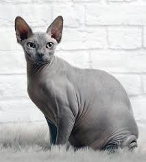
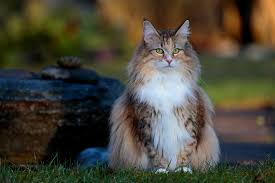

Nå har vi lest om noen katteraser, disse to er de siste. Kos deg!
Denne er en ganske spesiell katt, mange kaller den stygg og ekkel, men jeg synes de er ganske søte. Her har vi: Sphynx Katt.

Sphynx katten er en hårløs katt, så de blir ofte kalt for "nakenkatt". de er opprinelig ifra Toronto, Kanada, fra 1966. de er lekende katter som har ganske store ører. En liten fakta om de er at de blir solbrent.
Nå, sist, men ikke minst: Norsk skogkatt!

Norsk skogkatt ble først anerkjent i 1977, men de har røtter helt tilbake til vikingtiden! Altså de har vært her i 1000 år! det som er litt rart med den er at den er mer vanlig i Sverige enn i Norge, selv om den heter norsk skogkatt. Den er også den nest største katten i størrelse etter Maine Coon som vi snakket om før. De er også gode kjæledyr, forsikige, lekende og snille.
Da er jeg ferdig og fortelle om katter, jeg håper du lærte noe! Hvis du vil vite ENDA mer så klikk her. Bare litt mer om katter.